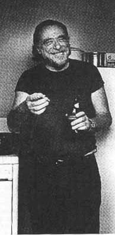
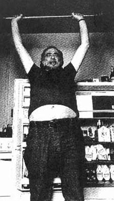

Charles Bukowski Bibliography
- Flower, Fist and Bestial Wall (1960)
- Longshot Pomes for Broke Players (1962)
- Run with the Hunted (1962)
- It Catches My Heart in Its Hand (1963)
- Crucifix in a Deathhand (1965)
- Cold Dogs in the Courtyard (1965)
- Confessions of a Man Insane Enough to Live with Beasts (1965)
- All the Assholes in the World and Mine(1966)
- The Curtains Are Waving... (1967)
- Poems Written Before Jumping out of an 8 Story Window (1968)
- At Terror Street and Agony Way (1968)
- A Bukowski Sampler (1969)
- Notes of a Dirty Old Man (1969)
- Days Run Away Like Wild Horses Over the Hills (1969)
- Fire Station (1970)
- Post Office (1971)
- Another Academy (1970)
- Anthology of LA Poets (1972)
- Mockingbird, Wish Me Luck (1972)
- Erections, Ejaculations, Exhibitions and General Tales of Ordinary Madness (1972)
- South of No North (1973)
- Burning in Water Drowning in Flame: Selected Poems 1955-1973 (1974)
- Factotum (1975)
- Scarlet (1976)
- Love is a Dog from Hell (1977)
- Women (1978)
- You Kissed Lilly (1978)
- Play the Piano Drunk Like a Percussion Instrument Until the Fingers Begin to Bleed a Bit (1979)

- Shakespeare Never Did This (1979)
- Dangling in the Tournefortia (1981)
- Ham on Rye (1982)
- Hot Water Music (1983)
- Bring Me Your Love (1983)
- There's No Business (1984)
- War All the Time: Poems 1981-1984 (1984)
- You Get So Alone at Times It Just Makes Sense (1986)
- The Movie Barfly (1987)
- A Visitor Complains of My Disenfranchise (1987)
- Roominghouse Madrigals: Early Selected Poems 1946-1966 (1988)
- Hollywood (1989)
- Septuagenarian Stew: Stories and Poems (1990)
- People Poems (1991)
- Bluebird (1991)
- In the Shadow of the Rose (1991)
- Three Poems (1992)
- Last Night of the Earth Poems (1992)
- Run with the Hunted: A Charles Bukowski Reader (1993)
- Screams from the Balcony: Selected Leters 1960-1970 (1993)
- Pulp (1994)
- Shakespeare Never Did This (Augmented Edition) (1995)
Special thanks to The Wino Xing page at The Picture Palace
Back to main Bukowski Page
Literary Kicks
Charles Bukowski Pages by
michael mccullough = michael@magick.net